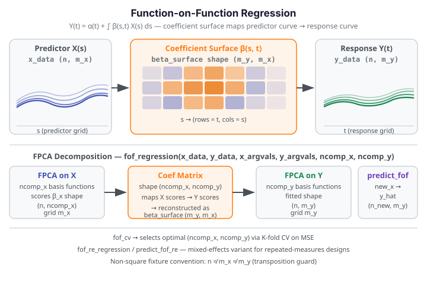

Function-on-Function Regression¶
Function-on-Function (FoF) regression extends linear regression to the setting where both the predictor and the response are functional observations. Instead of a scalar coefficient, the model estimates a bivariate coefficient surface \(\beta(s, t)\) that describes how each point on the predictor curve influences each point on the response curve.

Core Concept¶
Let \(X_i(s)\) be the \(i\)-th predictor curve evaluated on grid \(\{s_1, \ldots, s_{m_x}\}\), and \(Y_i(t)\) be the corresponding response curve on grid \(\{t_1, \ldots, t_{m_y}\}\). The FoF model is:
where \(\alpha(t)\) is a functional intercept and \(\varepsilon_i(t)\) is a mean-zero error
curve. fdars estimates the model via truncated FPCA: \(X\) is expanded in \(K_x\)
principal components and \(Y\) in \(K_y\) principal components, yielding a
\(K_x \times K_y\) coefficient matrix that maps back to the \(\beta(s, t)\) surface.
When to use¶
| Situation | Method | fdars function |
|---|---|---|
| Functional predictor → functional response, global surface | Function-on-Function regression | fof_regression |
| Functional predictor → functional response, pointwise local effect | Concurrent regression | concurrent_regression |
| Functional predictor → scalar response | Scalar-on-Function regression | fregre_lm, fregre_np, … |
| Same functional predictor/response, repeated-measures design | FoF random-effects | fof_re_regression |
Quick rule: Use fof_regression when you believe the predictor curve at point \(s\)
influences the response curve globally across all response time points \(t\) — the
coefficient surface \(\beta(s, t)\) captures that cross-time interaction. Use
concurrent regression instead when the effect at predictor
time \(t\) is purely local (only affects the response at the same time point \(t\)). Use
scalar-on-function regression when the response is a scalar.
When grids differ
FoF regression naturally handles non-square designs where the predictor grid
\(\{s_1, \ldots, s_{m_x}\}\) and the response grid \(\{t_1, \ldots, t_{m_y}\}\) have
different lengths or spacings. The coefficient surface beta_surface will have shape
(m_y, m_x) regardless.
1. Fitting: fof_regression¶
fof_regression fits the FoF model via truncated FPCA and returns a 9-key result dict.
from fdars.regression import fof_regression
fit = fof_regression(x_data, y_data, x_argvals, y_argvals, ncomp_x=3, ncomp_y=3)
| Parameter | Type | Description |
|---|---|---|
x_data |
np.ndarray (n, m_x) |
Predictor functional observations |
y_data |
np.ndarray (n, m_y) |
Response functional observations |
x_argvals |
np.ndarray (m_x,) |
Predictor evaluation grid |
y_argvals |
np.ndarray (m_y,) |
Response evaluation grid |
ncomp_x |
int |
FPCA components for predictors (default: 3) |
ncomp_y |
int |
FPCA components for responses (default: 3) |
Return dict (9 keys):
| Key | Type | Description |
|---|---|---|
intercept |
np.ndarray (m_y,) |
Functional intercept \(\alpha(t)\) |
beta_surface |
np.ndarray (m_y, m_x) |
Coefficient surface \(\beta(s, t)\) — rows = response grid, cols = predictor grid |
fitted |
np.ndarray (n, m_y) |
Fitted response curves |
residuals |
np.ndarray (n, m_y) |
Residual curves |
r_squared_t |
np.ndarray (m_y,) |
Point-wise R² across the response grid |
r_squared |
float |
Global R² scalar |
ncomp_x |
int |
Number of predictor FPCA components used |
ncomp_y |
int |
Number of response FPCA components used |
coef_matrix |
np.ndarray (ncomp_x, ncomp_y) |
Raw FPCA coefficient matrix |
Excluded keys
fpca_x and fpca_y (internal FPCA decomposition objects) are intentionally omitted
from the result dict — they are consumed inside the binding and not needed by callers.
import numpy as np
from fdars.regression import fof_regression
rng = np.random.default_rng(42)
n, mx, my = 20, 20, 15 # non-square predictor and response grids
tx = np.linspace(0, 1, mx)
ty = np.linspace(0, 1, my)
X = np.array([np.sin(2 * np.pi * tx + rng.uniform(0, 0.3)) for _ in range(n)])
Y = np.array([np.cos(np.pi * ty + rng.uniform(0, 0.3)) for _ in range(n)])
fit = fof_regression(X, Y, tx, ty, ncomp_x=3, ncomp_y=3)
print(f"beta_surface shape: {np.asarray(fit['beta_surface']).shape} (m_y={my}, m_x={mx})")
print(f"r_squared: {fit['r_squared']:.4f}")
print(f"r_squared_t range: [{np.asarray(fit['r_squared_t']).min():.4f}, "
f"{np.asarray(fit['r_squared_t']).max():.4f}]")
print("FDARS_FENCE_OK")
beta_surface shape: (15, 20) (m_y=15, m_x=20) r_squared: 0.0156 r_squared_t range: [0.0043, 0.0387] FDARS_FENCE_OK
2. Predicting: predict_fof¶
predict_fof refits the model on the training data and predicts response curves for
new predictor curves. The new_x argument is the third positional argument —
before the grid arrays.
from fdars.regression import predict_fof
y_hat = predict_fof(x_data, y_data, new_x, x_argvals, y_argvals, ncomp_x=3, ncomp_y=3)
| Parameter | Type | Description |
|---|---|---|
x_data |
np.ndarray (n, m_x) |
Training predictor curves |
y_data |
np.ndarray (n, m_y) |
Training response curves |
new_x |
np.ndarray (n_new, m_x) |
New predictor curves to predict for — THIRD arg |
x_argvals |
np.ndarray (m_x,) |
Predictor evaluation grid |
y_argvals |
np.ndarray (m_y,) |
Response evaluation grid |
ncomp_x |
int |
FPCA components for predictors (default: 3) |
ncomp_y |
int |
FPCA components for responses (default: 3) |
Returns np.ndarray of shape (n_new, m_y) — predicted response curves.
Argument order: new_x is third, not last
A common mistake is placing new_x after the grid arrays:
predict_fof(X, Y, tx, ty, ncomp_x, ncomp_y, new_x) — this raises a shape error
because the binding interprets tx as the new predictor data.
The correct call is predict_fof(X, Y, new_x, tx, ty).
import numpy as np
from fdars.regression import predict_fof
rng = np.random.default_rng(7)
n, mx, my = 20, 20, 15
tx = np.linspace(0, 1, mx)
ty = np.linspace(0, 1, my)
X = np.array([np.sin(2 * np.pi * tx + rng.uniform(0, 0.3)) for _ in range(n)])
Y = np.array([np.cos(np.pi * ty + rng.uniform(0, 0.3)) for _ in range(n)])
# 3 new predictor curves — new_x is the THIRD positional argument
new_x = np.array([np.sin(2 * np.pi * tx + phi) for phi in [0.0, 0.5, 1.0]])
y_hat = predict_fof(X, Y, new_x, tx, ty, ncomp_x=3, ncomp_y=3)
print(f"new_x shape: {new_x.shape}")
print(f"y_hat shape: {y_hat.shape} (n_new=3, m_y={my})")
print("FDARS_FENCE_OK")
new_x shape: (3, 20) y_hat shape: (3, 15) (n_new=3, m_y=15) FDARS_FENCE_OK
3. Coefficient Surface: beta_surface heatmap¶
The coefficient surface \(\beta(s, t)\) captures how every predictor grid point \(s\) contributes to every response grid point \(t\). The figure below renders the estimated surface as a heat map; strong off-diagonal structure indicates cross-time dependence.
import numpy as np
from docs_fig import fig, render
from fdars.regression import fof_regression
rng = np.random.default_rng(0)
n, mx, my = 25, 20, 15
tx = np.linspace(0, 1, mx)
ty = np.linspace(0, 1, my)
X = np.array([rng.standard_normal() * np.sin(2 * np.pi * tx)
+ rng.standard_normal() * np.cos(4 * np.pi * tx) for _ in range(n)])
Y = np.array([rng.standard_normal() * np.cos(np.pi * ty) for _ in range(n)])
fit = fof_regression(X, Y, tx, ty, ncomp_x=3, ncomp_y=3)
beta = np.asarray(fit["beta_surface"]) # shape (my, mx)
f, ax = fig()
im = ax.imshow(beta, aspect="auto", origin="lower",
extent=[tx[0], tx[-1], ty[0], ty[-1]], cmap="RdBu_r")
f.colorbar(im, ax=ax, shrink=0.8)
ax.set(title=r"Estimated coefficient surface $\beta(s,t)$",
xlabel="predictor grid $s$", ylabel="response grid $t$")
print(render(f))
print("FDARS_FENCE_OK")
beta_surface orientation
beta_surface has shape (m_y, m_x) — rows index the response grid \(t\), columns
index the predictor grid \(s\). When plotting with imshow, set origin="lower" so
that the bottom-left corner corresponds to \((s=0, t=0)\).
4. Cross-Validating Component Counts: fof_cv¶
fof_cv performs \(k\)-fold cross-validation over all (ncomp_x, ncomp_y) pairs with
\(1 \le K_x \le\) ncomp_x_max and \(1 \le K_y \le\) ncomp_y_max, returning the pair
that minimises held-out MSE.
from fdars.regression import fof_cv
cv = fof_cv(x_data, y_data, x_argvals, y_argvals,
ncomp_x_max=5, ncomp_y_max=5, n_folds=5, seed=42)
| Parameter | Type | Default | Description |
|---|---|---|---|
x_data |
np.ndarray (n, m_x) |
— | Predictor functional observations |
y_data |
np.ndarray (n, m_y) |
— | Response functional observations |
x_argvals |
np.ndarray (m_x,) |
— | Predictor evaluation grid |
y_argvals |
np.ndarray (m_y,) |
— | Response evaluation grid |
ncomp_x_max |
int |
5 | Maximum predictor components to search |
ncomp_y_max |
int |
5 | Maximum response components to search |
n_folds |
int |
5 | Number of cross-validation folds |
seed |
int |
42 | RNG seed for fold assignment |
Return dict:
| Key | Type | Description |
|---|---|---|
candidates |
list of (int, int) |
All (ncomp_x, ncomp_y) pairs evaluated |
cv_errors |
np.ndarray |
Cross-validation MSE for each candidate pair |
optimal |
tuple (int, int) |
Best (ncomp_x, ncomp_y) pair |
min_cv_mse |
float |
Minimum CV MSE across all candidates |
Pass integer upper bounds, not a list
fof_cv takes integer ceiling arguments ncomp_x_max and ncomp_y_max — it does
not accept a range list. Passing a keyword list argument raises
TypeError: unexpected keyword argument. Always use the _max form shown above.
import numpy as np
from fdars.regression import fof_cv
rng = np.random.default_rng(42)
n, mx, my = 20, 20, 15
tx = np.linspace(0, 1, mx)
ty = np.linspace(0, 1, my)
X = np.array([np.sin(2 * np.pi * tx + rng.uniform(0, 0.3)) for _ in range(n)])
Y = np.array([np.cos(np.pi * ty + rng.uniform(0, 0.3)) for _ in range(n)])
cv = fof_cv(X, Y, tx, ty, ncomp_x_max=4, ncomp_y_max=4, n_folds=4, seed=0)
print(f"optimal (ncomp_x, ncomp_y): {cv['optimal']}")
print(f"min_cv_mse: {cv['min_cv_mse']:.4f}")
print(f"candidates evaluated: {len(cv['candidates'])}")
print("FDARS_FENCE_OK")
optimal (ncomp_x, ncomp_y): (1, 1) min_cv_mse: 0.0050 candidates evaluated: 16 FDARS_FENCE_OK
Choosing ncomp_x and ncomp_y
Start with ncomp_x_max=5, ncomp_y_max=5 as an initial search range. If the
optimal pair lands at the boundary (e.g., optimal=(5, 5)), widen the range.
The total number of candidates grows as ncomp_x_max * ncomp_y_max, so searching
up to 8 × 8 = 64 pairs is practical for small datasets but may be slow for
\(n > 200\) or large grids.
5. Interpreting Results¶
Reading the coefficient surface¶
beta_surface[j, k] is \(\hat\beta(s_k, t_j)\) — the estimated influence of the predictor
at grid point \(s_k\) on the response at grid point \(t_j\). Rows correspond to the response
grid, columns to the predictor grid.
When \(\beta(s, t)\) is concentrated near the diagonal, the relationship is approximately concurrent (local-in-time). When off-diagonal entries are large, the predictor at time \(s\) influences the response at different time \(t\), which is the defining feature of the full FoF model.
Point-wise vs global R²¶
r_squared_t is a vector of length \(m_y\): the proportion of variance explained at each
response grid point separately. r_squared is the global (averaged) R².
When the coefficient surface \(\beta(s, t)\) is smooth but the signal is concentrated at a
few response grid points, r_squared_t can show large values at those points while
r_squared remains moderate. This is expected and not a sign of overfitting.
6. Random-Effects Variant: fof_re_regression¶
For repeated-measures designs where each subject contributes multiple curves, the random-effects FoF model adds subject-level random intercepts to the functional intercept.
from fdars.regression import fof_re_regression, predict_fof_re
fit_re = fof_re_regression(x_data, y_data, subject_ids, x_argvals, y_argvals,
ncomp_x=3, ncomp_y=3, max_iter=50, tol=1e-10)
| Parameter | Type | Default | Description |
|---|---|---|---|
x_data |
np.ndarray (n, m_x) |
— | Predictor curves |
y_data |
np.ndarray (n, m_y) |
— | Response curves |
subject_ids |
np.ndarray (n,) int64 |
— | Subject group labels (≥2 distinct, non-negative) |
x_argvals |
np.ndarray (m_x,) |
— | Predictor evaluation grid |
y_argvals |
np.ndarray (m_y,) |
— | Response evaluation grid |
ncomp_x |
int |
3 | FPCA components for predictors |
ncomp_y |
int |
3 | FPCA components for responses |
max_iter |
int |
50 | Maximum EM iterations |
tol |
float |
1e-10 | EM convergence tolerance |
Return dict (13 keys): the 9 keys from fof_regression plus:
| Key | Type | Description |
|---|---|---|
random_effects |
np.ndarray (n_subjects, m_y) |
Estimated subject-level random intercepts |
sigma2_u |
np.ndarray (ncomp_y,) |
Variance of random effects per FPCA component |
sigma2_eps |
float |
Residual error variance |
n_subjects |
int |
Number of distinct subjects |
predict_fof_re — Predicting from the random-effects model:
y_hat_re = predict_fof_re(x_data, y_data, subject_ids, new_x,
x_argvals, y_argvals, ncomp_x=3, ncomp_y=3,
max_iter=50, tol=1e-10)
The new_x argument is the fourth positional argument (after subject_ids).
Returns np.ndarray (n_new, m_y).
predict_fof_re argument order
The random-effects predict function signature is:
predict_fof_re(x_data, y_data, subject_ids, new_x, x_argvals, y_argvals, ...).
Note that subject_ids comes before new_x, making new_x the fourth
positional argument — one position later than in predict_fof.
Methods available in the R package but not (yet) in Python¶
Methods available in the R package but not (yet) in Python
- Basis-expansion FoF: using B-spline or Fourier basis representations for both
predictor and response curves is not directly exposed.
fof_regressionuses the FPCA approach only. - Historical covariance inspection tools: functions for inspecting and plotting the
cross-covariance surface between predictor and response (available in R's
fdapackage) are not currently infdars.
References¶
- Ramsay, J. O. and Silverman, B. W. (2005). Functional Data Analysis, 2nd ed. Springer.
- Yao, F., Müller, H.-G. and Wang, J.-L. (2005). Functional linear regression analysis for longitudinal data. Annals of Statistics 33(6), 2873–2903.
- Chiou, J.-M. (2012). Dynamical functional prediction and classification, with application to traffic flow prediction. Annals of Applied Statistics 6(4), 1588–1614.
See also¶
- Concurrent Regression — functional-response regression with a local-in-time (pointwise) coefficient, no global surface
- Function-on-Scalar Regression — scalar predictor driving a functional response
- Scalar-on-Function Regression — functional predictor driving a scalar response
- Cross-Validation — using
fof_cvfor component-count selection - Regression index — overview of all regression methods in
fdars